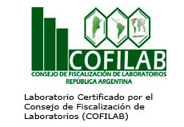
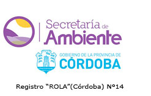
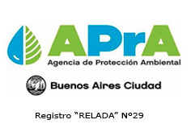
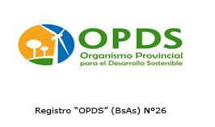

Consultoria quimica - Ingenieria ambiental y laboral
Laboratorio de analisis industriales
Consultoria y gestion ambiental
CHEMICONSULT posee más de 35 años de experiencia brindando servicios analíticos y de consultoría ambiental. Nuestra amplia trayectoria nos permite ofrecerle una sólida experiencia para los requerimientos de su empresa.
Contamos con certificacion de
   